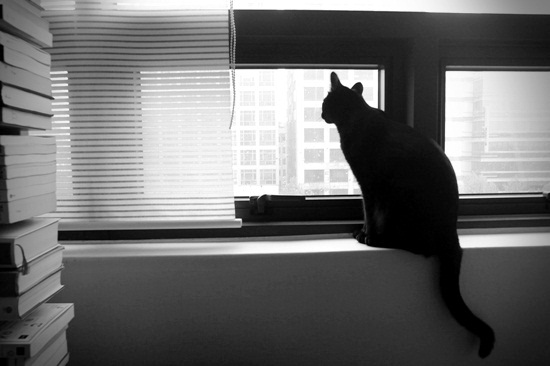
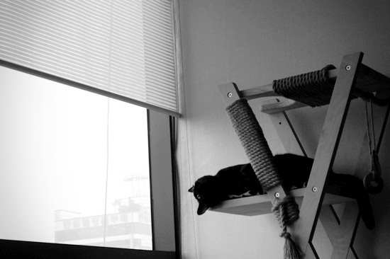
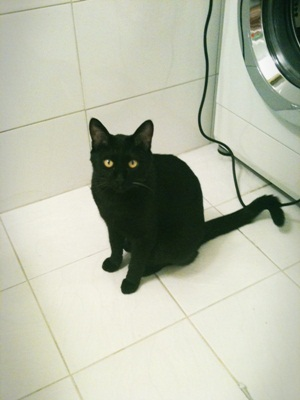

자기가 원하는 만큼 내가 놀아주지 않으니까 우울하고 무기력해지는 모양이다.
야옹야옹 시끄럽게 보채다가도 반응이 없으면 이내 포기하고 슬픈 눈동자로 드러누워 버린다.
게다가 담요나 신발끈, 옷 등을 가리지 않고 물어뜯어 놓는 일이 잦은 걸 보면
뭔가 스트레스를 꽤 심하게 받고 있는 것 같다.
지난 번 진료 때 외동이라서 그럴 수도 있다는 말을 들었는데,
둘째를 들여야 할지 심각하게 고민중이다.
화장실까지 따라다니는... 외동 간장선생;;;